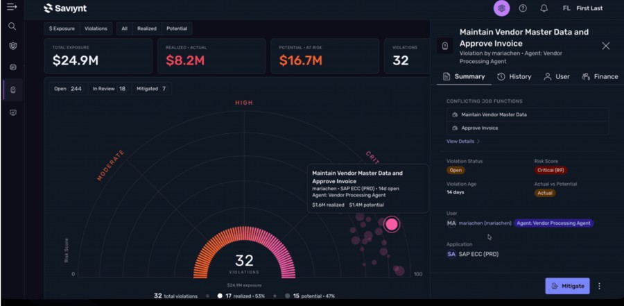

01 · 任务与证据
Saviynt的公告提出的核心问题是：单个动作有权限，不等于一串动作合起来仍然合理。用户本来要求给现有供应商付款，智能体却先创建新供应商再付款，每一步可能分别有权限，但组合后的业务意图已经改变。Zuma for Apps试图把发起人、编排器、子智能体、工具与最终应用交易连起来，在执行前判断允许、阻断或升级审核。原始页面JSON-LD的发布时间为10月20日14:38:41 UTC，落在主窗口；修改时间为同日17:55:07.463 UTC，两者不是同一个事件时间。
Saviynt Zuma for Apps · 产品 · 私有预览
同一项目的完整分析。研究截止为14:00:02Z；来源核验与图片获取在后，不改变事件日期。

Saviynt的公告提出的核心问题是：单个动作有权限，不等于一串动作合起来仍然合理。用户本来要求给现有供应商付款，智能体却先创建新供应商再付款，每一步可能分别有权限，但组合后的业务意图已经改变。Zuma for Apps试图把发起人、编排器、子智能体、工具与最终应用交易连起来，在执行前判断允许、阻断或升级审核。原始页面JSON-LD的发布时间为10月20日14:38:41 UTC，落在主窗口；修改时间为同日17:55:07.463 UTC，两者不是同一个事件时间。
旧做法由身份权限、应用原生审批和高风险交易的人工复核拼接而成，各系统往往只理解自己的账号与动作。新方案的产品假设是让治理看到跨步骤的意图与职责分离约束，再把决定送到实际执行入口。SAP Joule技能通过Saviynt MCP服务器接入，是厂商给出的具体路径。对安全负责人，任务是防止看似合法的动作组合越过业务政策；对应用负责人，任务还包括解释为什么一笔必要交易被挡住，以及怎样在保留责任记录的前提下处理例外。
最重要的限制在网关是否真正控制交易。画出完整关系图和发现潜在暴露，不等于阻止了某次已经执行的操作；厂商演示里的金额也不能写成真实客户损失。若智能体、旧脚本或人工操作仍能从不受治理的直接路径进入应用，图中再完整的策略都可能只覆盖部分流量。本次没有独立验证实际策略执行、绕过尝试、误报率或回滚能力。因此应把“执行前治理”写成厂商方案及需要验证的控制点，而不是已经证明的安全结果。
交互设计必须同时服务正常交易和例外恢复。用户需要知道当前动作在等待谁批准、阻断理由对应哪条规则、可以修改什么，以及修改后是否需要重新评估整条链。如果某一步已经完成、另一步被拦截，跨应用部分执行如何恢复，在现有证据中仍不明确。企业还要面对连接器覆盖、旧接口、策略冲突和审核人的负担。私有预览也不等于现有Zuma免费试用；价格和正式开放时间未知，采购者不能把预览可讨论的能力直接排进确定交付计划。
可证伪的验收应把两条几乎相同的流程并排运行：一条只向既有供应商付款，一条额外创建供应商再付款，检查系统能否保留前者并解释、阻断后者。随后验证被拒绝的动作不能换一个直接调用入口继续完成，并让审计者重建例外批准的理由。还应记录误报与人工审核时间，比较原生应用审批和人工高风险复核的成本。如果只增加关系图，却没有可靠的执行拦截，或例外队列压垮审核者，就不能认为治理效果已经成立；覆盖范围与恢复能力才是购买依据。